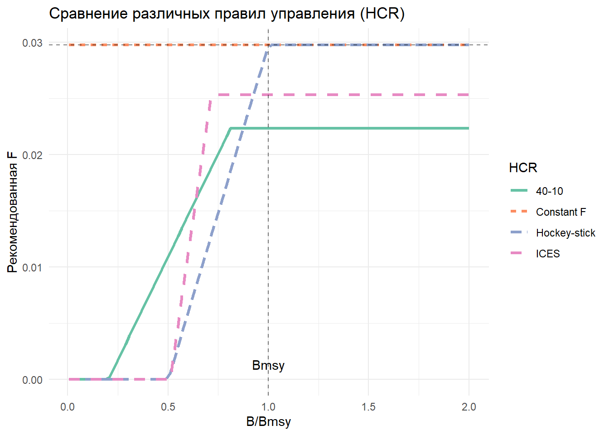
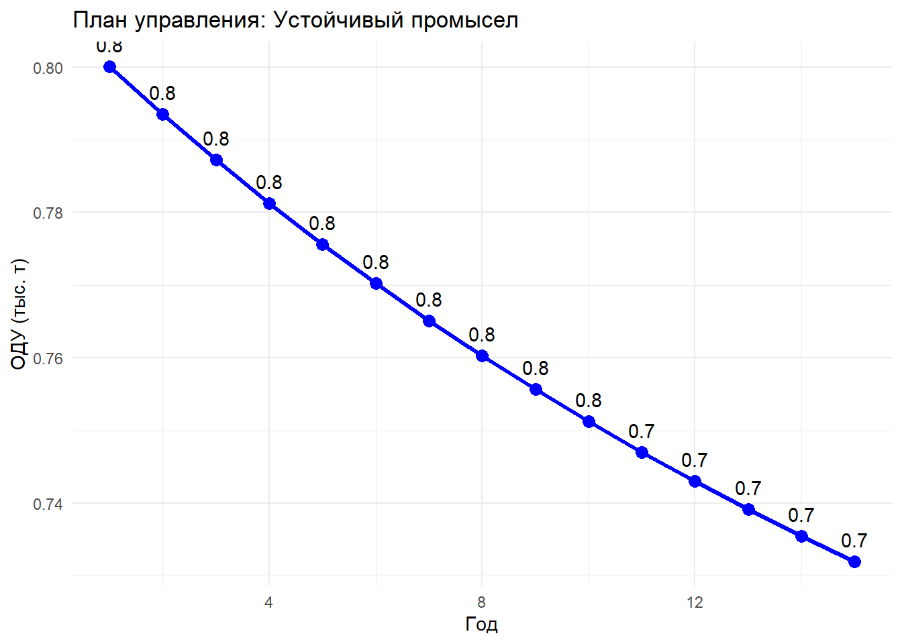

# ===============================================================
# СКРИПТ 2: ПРАВИЛА УПРАВЛЕНИЯ (HCR) И ОПРЕДЕЛЕНИЕ ОДУ
# Курс: Оценка водных биоресурсов при недостатке данных в R
# Автор: [Ваше имя]
# Дата создания: 2024
# ===============================================================
# ======================= ВВЕДЕНИЕ =============================
# Этот скрипт демонстрирует различные правила управления промыслом
# (Harvest Control Rules - HCR) и методы определения общего
# допустимого улова (ОДУ/TAC) на основе результатов SPiCT
# ------------------- 1. ПОДГОТОВКА СРЕДЫ --------------------
## 1.1 Очистка среды и загрузка библиотек
rm(list = ls())
library(spict)Загрузка требуемого пакета: TMBWelcome to spict_v1.3.8@107a32library(tidyverse)-- Attaching core tidyverse packages ------------------------ tidyverse 2.0.0 --
v dplyr 1.1.4 v readr 2.1.5
v forcats 1.0.0 v stringr 1.5.1
v ggplot2 3.5.2 v tibble 3.2.1
v lubridate 1.9.4 v tidyr 1.3.1
v purrr 1.0.4 -- Conflicts ------------------------------------------ tidyverse_conflicts() --
x dplyr::filter() masks stats::filter()
x dplyr::lag() masks stats::lag()
i Use the conflicted package (<http://conflicted.r-lib.org/>) to force all conflicts to become errorslibrary(ggplot2)
library(gridExtra)
Присоединяю пакет: 'gridExtra'
Следующий объект скрыт от 'package:dplyr':
combine## 1.2 Загрузка результатов из первого скрипта
# Предполагаем, что модель уже подогнана и сохранена
setwd("C:/SPICT")
fit <- readRDS("spict_model_fit.rds")
cat("\n========== АНАЛИЗ ПРАВИЛ УПРАВЛЕНИЯ (HCR) ==========\n")
========== АНАЛИЗ ПРАВИЛ УПРАВЛЕНИЯ (HCR) ==========cat("Модель загружена успешно\n")Модель загружена успешно# ------------------- 2. ОБЗОР СТАНДАРТНЫХ СЦЕНАРИЕВ --------------------
cat("\n========== СТАНДАРТНЫЕ СЦЕНАРИИ УПРАВЛЕНИЯ ==========\n")
========== СТАНДАРТНЫЕ СЦЕНАРИИ УПРАВЛЕНИЯ ==========## 2.1 Использование функции sumspict.manage()
# Эта функция рассчитывает прогнозы для различных сценариев управления
# include.unc = TRUE включает оценку неопределенности
fit <- manage(fit)Selected scenario(s): currentCatch, currentF, Fmsy, noF, reduceF25, increaseF25, msyHockeyStick, ices ## 2.2 Вывод результатов
cat("\nДоступные сценарии управления:\n")
Доступные сценарии управления:manage_results <- sumspict.manage(fit, include.unc = TRUE)SPiCT timeline:
Observations Management
2005.00 - 2025.00 2025.00 - 2026.00
|-----------------------| ----------------------|
Management evaluation: 2026.00
Predicted catch for management period and states at management evaluation time:
C B/Bmsy F/Fmsy
1. Keep current catch 11.8 1.31 0.52
2. Keep current F 12.5 1.30 0.55
3. Fish at Fmsy 22.0 1.20 1.00
4. No fishing 0.0 1.42 0.00
5. Reduce F by 25% 9.5 1.33 0.41
6. Increase F by 25% 15.4 1.27 0.68
7. MSY hockey-stick rule 22.0 1.20 1.00
8. ICES advice rule 19.8 1.23 0.90
95% confidence intervals for states:
B/Bmsy.lo B/Bmsy.hi F/Fmsy.lo F/Fmsy.hi
1. Keep current catch 1.12 1.52 0.23 1.15
2. Keep current F 1.11 1.51 0.25 1.22
3. Fish at Fmsy 1.00 1.44 0.45 2.23
4. No fishing 1.25 1.63 0.00 0.00
5. Reduce F by 25% 1.15 1.54 0.18 0.92
6. Increase F by 25% 1.08 1.49 0.31 1.53
7. MSY hockey-stick rule 1.00 1.44 0.45 2.23
8. ICES advice rule 1.03 1.46 0.40 2.00## 2.3 Детальный разбор сценариев
cat("\n--- ОПИСАНИЕ СЦЕНАРИЕВ ---\n")
--- ОПИСАНИЕ СЦЕНАРИЕВ ---cat("1. Keep current catch: Сохранить текущий уровень вылова\n")1. Keep current catch: Сохранить текущий уровень выловаcat("2. Keep current F: Сохранить текущую промысловую смертность\n")2. Keep current F: Сохранить текущую промысловую смертностьcat("3. Fish at Fmsy: Промысел на уровне Fmsy (оптимальный)\n")3. Fish at Fmsy: Промысел на уровне Fmsy (оптимальный)cat("4. No fishing: Полное закрытие промысла\n")4. No fishing: Полное закрытие промыслаcat("5. Reduce F by 25%: Снизить F на 25%\n")5. Reduce F by 25%: Снизить F на 25%cat("6. Increase F by 25%: Увеличить F на 25%\n")6. Increase F by 25%: Увеличить F на 25%cat("7. MSY hockey-stick: Правило хоккейной клюшки\n")7. MSY hockey-stick: Правило хоккейной клюшкиcat("8. ICES advice rule: Правило ICES для научных рекомендаций\n")8. ICES advice rule: Правило ICES для научных рекомендаций# ------------------- 3. ДЕТАЛЬНЫЙ АНАЛИЗ КАЖДОГО СЦЕНАРИЯ --------------------
cat("\n========== ДЕТАЛЬНЫЙ АНАЛИЗ СЦЕНАРИЕВ ==========\n")
========== ДЕТАЛЬНЫЙ АНАЛИЗ СЦЕНАРИЕВ ==========## 3.1 Функция для расчета детальных прогнозов
calculate_scenario_details <- function(fit, scenario_name, F_multiplier = 1.0,
years_ahead = 5) {
# Извлекаем текущие параметры
B_current <- get.par("logB", fit, exp = TRUE)[1]
F_current <- get.par("logF", fit, exp = TRUE)[1]
r <- get.par("logr", fit, exp = TRUE)[1]
K <- get.par("logK", fit, exp = TRUE)[1]
Bmsy <- get.par("logBmsy", fit, exp = TRUE)[1]
Fmsy <- get.par("logFmsy", fit, exp = TRUE)[1]
# Применяем сценарий
F_scenario <- F_current * F_multiplier
# Прогнозирование
B_forecast <- numeric(years_ahead + 1)
C_forecast <- numeric(years_ahead)
B_forecast[1] <- B_current
for (i in 1:years_ahead) {
# Продукционная модель Шефера
surplus <- r * B_forecast[i] * (1 - B_forecast[i]/K)
C_forecast[i] <- F_scenario * B_forecast[i]
B_forecast[i+1] <- B_forecast[i] + surplus - C_forecast[i]
B_forecast[i+1] <- max(B_forecast[i+1], 0.01) # Минимальная биомасса
}
# Результаты
results <- data.frame(
Year = 0:years_ahead,
Scenario = scenario_name,
Biomass = B_forecast,
Catch = c(NA, C_forecast),
B_Bmsy = B_forecast / Bmsy,
F = c(rep(F_scenario, years_ahead + 1)),
F_Fmsy = F_scenario / Fmsy
)
return(results)
}
## 3.2 Расчет для всех базовых сценариев
scenarios_list <- list(
"Current F" = 1.0,
"Fmsy" = get.par("logFmsy", fit, exp = TRUE)[1] /
get.par("logF", fit, exp = TRUE)[1],
"No fishing" = 0,
"Reduce F 25%" = 0.75,
"Increase F 25%" = 1.25
)
all_scenarios <- bind_rows(
lapply(names(scenarios_list), function(name) {
calculate_scenario_details(fit, name, scenarios_list[[name]], years_ahead = 10)
})
)
## 3.3 Визуализация сценариев
p_scenarios <- ggplot(all_scenarios, aes(x = Year, y = Biomass,
color = Scenario, linetype = Scenario)) +
geom_line(linewidth = 1.2) +
geom_hline(yintercept = get.par("logBmsy", fit, exp = TRUE)[1],
linetype = "dashed", alpha = 0.5) +
labs(title = "Прогноз биомассы при различных сценариях управления",
x = "Годы вперед", y = "Биомасса (тыс. т)") +
theme_minimal() +
scale_color_brewer(palette = "Set1")
print(p_scenarios)# ------------------- 4. ПРАВИЛО ХОККЕЙНОЙ КЛЮШКИ (MSY HOCKEY-STICK) --------------------
cat("\n========== MSY HOCKEY-STICK ПРАВИЛО ==========\n")
========== MSY HOCKEY-STICK ПРАВИЛО ==========## 4.1 Описание правила
cat("\nПравило хоккейной клюшки:\n")
Правило хоккейной клюшки:cat("- Если B >= Bmsy, то F = Fmsy\n")- Если B >= Bmsy, то F = Fmsycat("- Если B < Bmsy, то F = Fmsy * (B/Bmsy)\n")- Если B < Bmsy, то F = Fmsy * (B/Bmsy)cat("Это правило обеспечивает линейное снижение F при снижении биомассы\n")Это правило обеспечивает линейное снижение F при снижении биомассы## 4.2 Функция для hockey-stick HCR
hockey_stick_HCR <- function(B, Bmsy, Fmsy, Blim = NULL) {
# Blim - предельная биомасса (по умолчанию 0.5*Bmsy)
if (is.null(Blim)) Blim <- 0.5 * Bmsy
B_Bmsy <- B / Bmsy
if (B <= Blim) {
# Критически низкая биомасса - закрытие промысла
F_advice <- 0
} else if (B > Blim & B < Bmsy) {
# Линейное снижение F
F_advice <- Fmsy * (B - Blim) / (Bmsy - Blim)
} else {
# Биомасса выше Bmsy - полный промысел
F_advice <- Fmsy
}
return(F_advice)
}
## 4.3 Демонстрация правила
B_range <- seq(0, 2 * get.par("logBmsy", fit, exp = TRUE)[1], length.out = 100)
Bmsy <- get.par("logBmsy", fit, exp = TRUE)[1]
Fmsy <- get.par("logFmsy", fit, exp = TRUE)[1]
F_hockey <- sapply(B_range, function(b) hockey_stick_HCR(b, Bmsy, Fmsy))
df_hockey <- data.frame(
Biomass = B_range,
F_advice = F_hockey,
B_Bmsy = B_range / Bmsy
)
p_hockey <- ggplot(df_hockey, aes(x = B_Bmsy, y = F_advice)) +
geom_line(linewidth = 1.5, color = "darkblue") +
geom_vline(xintercept = 1, linetype = "dashed", color = "red") +
geom_vline(xintercept = 0.5, linetype = "dotted", color = "orange") +
geom_hline(yintercept = Fmsy, linetype = "dashed", color = "green") +
labs(title = "MSY Hockey-Stick правило управления",
x = "B/Bmsy", y = "F рекомендованное") +
theme_minimal() +
annotate("text", x = 1, y = 0, label = "Bmsy", vjust = -1) +
annotate("text", x = 0.5, y = 0, label = "Blim", vjust = -1)
print(p_hockey)# ------------------- 5. ПРАВИЛО ICES --------------------
cat("\n========== ПРАВИЛО ICES ==========\n")
========== ПРАВИЛО ICES ==========## 5.1 Описание правила ICES
cat("\nПравило ICES (упрощенное):\n")
Правило ICES (упрощенное):cat("- Основано на предосторожном подходе\n")- Основано на предосторожном подходеcat("- Использует Bpa (предосторожная биомасса) и Fpa\n")- Использует Bpa (предосторожная биомасса) и Fpacat("- Включает ограничения на межгодовые изменения TAC\n")- Включает ограничения на межгодовые изменения TAC## 5.2 Функция правила ICES
ICES_advice_rule <- function(B, Bmsy, Fmsy, previous_TAC = NULL,
Bpa_multiplier = 1.4, Fpa_multiplier = 0.85,
max_change = 0.2) {
# Расчет предосторожных референсных точек
Bpa <- Bmsy / Bpa_multiplier # Предосторожная биомасса
Blim <- Bpa / 1.4 # Предельная биомасса
Fpa <- Fmsy * Fpa_multiplier # Предосторожная F
# Определение F в зависимости от состояния запаса
if (B < Blim) {
F_advice <- 0 # Закрытие промысла
status <- "Критическое"
} else if (B >= Blim & B < Bpa) {
F_advice <- Fpa * (B - Blim) / (Bpa - Blim)
status <- "Восстановление"
} else {
F_advice <- Fpa
status <- "Устойчивое"
}
# Расчет TAC
TAC <- F_advice * B
# Ограничение межгодовых изменений (если есть предыдущий TAC)
if (!is.null(previous_TAC) && previous_TAC > 0) {
max_increase <- previous_TAC * (1 + max_change)
max_decrease <- previous_TAC * (1 - max_change)
TAC <- min(max(TAC, max_decrease), max_increase)
}
return(list(
F_advice = F_advice,
TAC = TAC,
status = status,
Bpa = Bpa,
Blim = Blim,
Fpa = Fpa
))
}
## 5.3 Применение правила ICES
B_current <- get.par("logB", fit, exp = TRUE)[1]
ices_result <- ICES_advice_rule(B_current, Bmsy, Fmsy, previous_TAC = 12)
cat("\n--- Результаты применения правила ICES ---\n")
--- Результаты применения правила ICES ---cat("Текущая биомасса:", round(B_current, 1), "тыс. т\n")Текущая биомасса: 103 тыс. тcat("Статус запаса:", ices_result$status, "\n")Статус запаса: Устойчивое cat("Bpa:", round(ices_result$Bpa, 1), "тыс. т\n")Bpa: 54.9 тыс. тcat("Blim:", round(ices_result$Blim, 1), "тыс. т\n")Blim: 39.2 тыс. тcat("Fpa:", round(ices_result$Fpa, 3), "\n")Fpa: 0.123 cat("Рекомендованная F:", round(ices_result$F_advice, 3), "\n")Рекомендованная F: 0.123 cat("Рекомендованный TAC:", round(ices_result$TAC, 1), "тыс. т\n")Рекомендованный TAC: 12.7 тыс. т# ------------------- 6. ПРАВИЛО 40-10 --------------------
cat("\n========== ПРАВИЛО 40-10 ==========\n")
========== ПРАВИЛО 40-10 ==========## 6.1 Описание правила
cat("\nПравило 40-10 (используется в США):\n")
Правило 40-10 (используется в США):cat("- Если B/B0 >= 40%, то F = Ftarget\n")- Если B/B0 >= 40%, то F = Ftargetcat("- Если 10% < B/B0 < 40%, то F линейно снижается\n")- Если 10% < B/B0 < 40%, то F линейно снижаетсяcat("- Если B/B0 <= 10%, то F = 0 (закрытие промысла)\n")- Если B/B0 <= 10%, то F = 0 (закрытие промысла)## 6.2 Функция правила 40-10
rule_40_10 <- function(B, B0, Ftarget) {
depletion <- B / B0
if (depletion <= 0.10) {
F_advice <- 0
status <- "Закрыт"
} else if (depletion > 0.10 & depletion < 0.40) {
F_advice <- Ftarget * (depletion - 0.10) / (0.40 - 0.10)
status <- "Ограничен"
} else {
F_advice <- Ftarget
status <- "Полный промысел"
}
return(list(F_advice = F_advice, status = status, depletion = depletion))
}
## 6.3 Применение правила 40-10
K <- get.par("logK", fit, exp = TRUE)[1] # K примерно равно B0
result_40_10 <- rule_40_10(B_current, K, Fmsy * 0.75)
cat("\n--- Результаты правила 40-10 ---\n")
--- Результаты правила 40-10 ---cat("Истощение запаса (B/B0):", round(result_40_10$depletion * 100, 1), "%\n")Истощение запаса (B/B0): 66.9 %cat("Статус:", result_40_10$status, "\n")Статус: Полный промысел cat("Рекомендованная F:", round(result_40_10$F_advice, 3), "\n")Рекомендованная F: 0.109 cat("Рекомендованный вылов:", round(result_40_10$F_advice * B_current, 1), "тыс. т\n")Рекомендованный вылов: 11.2 тыс. т# ------------------- 7. СРАВНЕНИЕ ВСЕХ ПРАВИЛ --------------------
cat("\n========== СРАВНЕНИЕ ПРАВИЛ УПРАВЛЕНИЯ ==========\n")
========== СРАВНЕНИЕ ПРАВИЛ УПРАВЛЕНИЯ ==========## 7.1 Функция для сравнения правил при разных уровнях биомассы
compare_HCRs <- function(B_range, Bmsy, Fmsy, K) {
results <- data.frame(
Biomass = rep(B_range, 4),
B_Bmsy = rep(B_range / Bmsy, 4),
HCR = rep(c("Hockey-stick", "ICES", "40-10", "Constant F"),
each = length(B_range)),
F_advice = NA
)
for (i in 1:length(B_range)) {
B <- B_range[i]
# Hockey-stick
results$F_advice[i] <- hockey_stick_HCR(B, Bmsy, Fmsy)
# ICES
ices <- ICES_advice_rule(B, Bmsy, Fmsy)
results$F_advice[i + length(B_range)] <- ices$F_advice
# 40-10
rule40 <- rule_40_10(B, K, Fmsy * 0.75)
results$F_advice[i + 2*length(B_range)] <- rule40$F_advice
# Constant F
results$F_advice[i + 3*length(B_range)] <- Fmsy
}
return(results)
}
## 7.2 Создание сравнительного графика
B_test_range <- seq(0.1, 2 * Bmsy, length.out = 100)
comparison_df <- compare_HCRs(B_test_range, Bmsy, Fmsy, K)
p_comparison <- ggplot(comparison_df, aes(x = B_Bmsy, y = F_advice,
color = HCR, linetype = HCR)) +
geom_line(linewidth = 1.2) +
geom_vline(xintercept = 1, linetype = "dashed", alpha = 0.5) +
geom_hline(yintercept = Fmsy, linetype = "dashed", alpha = 0.5) +
labs(title = "Сравнение различных правил управления (HCR)",
x = "B/Bmsy", y = "Рекомендованная F") +
theme_minimal() +
scale_color_brewer(palette = "Set2") +
annotate("text", x = 1, y = 0, label = "Bmsy", vjust = -1)
print(p_comparison)
# ------------------- 8. РАСЧЕТ ОДУ С УЧЕТОМ НЕОПРЕДЕЛЕННОСТИ --------------------
cat("\n========== РАСЧЕТ ОДУ С НЕОПРЕДЕЛЕННОСТЬЮ ==========\n")
========== РАСЧЕТ ОДУ С НЕОПРЕДЕЛЕННОСТЬЮ ==========## 8.1 Функция для расчета ОДУ с доверительными интервалами
calculate_TAC_uncertainty <- function(fit, F_target_ratio = 1.0,
confidence_level = 0.95) {
# Извлечение параметров с неопределенностью
B_est <- get.par("logB", fit, exp = TRUE)
F_current <- get.par("logF", fit, exp = TRUE)
Fmsy <- get.par("logFmsy", fit, exp = TRUE)
# Целевая F
F_target <- Fmsy[1] * F_target_ratio
# Расчет TAC с квантилями
TAC_median <- F_target * B_est[1]
TAC_lower <- F_target * B_est[2] # Нижняя граница
TAC_upper <- F_target * B_est[3] # Верхняя граница
# Предосторожный подход - используем нижний квантиль биомассы
TAC_precautionary <- F_target * B_est[2]
return(list(
TAC_median = TAC_median,
TAC_lower = TAC_lower,
TAC_upper = TAC_upper,
TAC_precautionary = TAC_precautionary,
F_target = F_target,
B_estimate = B_est
))
}
## 8.2 Расчет TAC для разных сценариев
scenarios_TAC <- list(
"F = Fmsy" = 1.0,
"F = 0.75*Fmsy" = 0.75,
"F = 0.5*Fmsy" = 0.5,
"F = 1.25*Fmsy" = 1.25
)
cat("\n--- Расчет ОДУ для различных целевых F ---\n")
--- Расчет ОДУ для различных целевых F ---for (scenario in names(scenarios_TAC)) {
tac_result <- calculate_TAC_uncertainty(fit, scenarios_TAC[[scenario]])
cat(sprintf("\n%s:\n", scenario))
cat(sprintf(" TAC (медиана): %.1f тыс. т\n", tac_result$TAC_median))
cat(sprintf(" TAC (95%% CI): [%.1f - %.1f] тыс. т\n",
tac_result$TAC_lower, tac_result$TAC_upper))
cat(sprintf(" TAC (предосторожный): %.1f тыс. т\n",
tac_result$TAC_precautionary))
}
F = Fmsy:
TAC (медиана): 14.9 тыс. т
TAC (95% CI): [15.0 - 15.1] тыс. т
TAC (предосторожный): 15.0 тыс. т
F = 0.75*Fmsy:
TAC (медиана): 11.2 тыс. т
TAC (95% CI): [11.3 - 11.3] тыс. т
TAC (предосторожный): 11.3 тыс. т
F = 0.5*Fmsy:
TAC (медиана): 7.4 тыс. т
TAC (95% CI): [7.5 - 7.6] тыс. т
TAC (предосторожный): 7.5 тыс. т
F = 1.25*Fmsy:
TAC (медиана): 18.6 тыс. т
TAC (95% CI): [18.8 - 18.9] тыс. т
TAC (предосторожный): 18.8 тыс. т# ------------------- 9. МНОГОЛЕТНИЙ ПЛАН УПРАВЛЕНИЯ --------------------
cat("\n========== МНОГОЛЕТНИЙ ПЛАН УПРАВЛЕНИЯ ==========\n")
========== МНОГОЛЕТНИЙ ПЛАН УПРАВЛЕНИЯ ==========## 9.1 Функция для создания многолетнего плана
create_management_plan <- function(fit, n_years = 5,
target_B_Bmsy = 1.2,
recovery_period = 10) {
# Текущее состояние
B_current <- get.par("logB", fit, exp = TRUE)[1]
Bmsy <- get.par("logBmsy", fit, exp = TRUE)[1]
Fmsy <- get.par("logFmsy", fit, exp = TRUE)[1]
r <- get.par("logr", fit, exp = TRUE)[1]
K <- get.par("logK", fit, exp = TRUE)[1]
B_Bmsy_current <- B_current / Bmsy
# Определение стратегии
if (B_Bmsy_current < 0.5) {
strategy <- "Восстановление запаса"
F_multiplier_start <- 0.3
F_multiplier_end <- 0.7
} else if (B_Bmsy_current < 1.0) {
strategy <- "Умеренное восстановление"
F_multiplier_start <- 0.7
F_multiplier_end <- 0.9
} else {
strategy <- "Устойчивый промысел"
F_multiplier_start <- 1.0
F_multiplier_end <- 1.0
}
# План по годам
plan <- data.frame(
Year = 1:n_years,
Strategy = strategy,
F_multiplier = seq(F_multiplier_start, F_multiplier_end,
length.out = n_years),
F_target = NA,
Expected_B = NA,
Expected_B_Bmsy = NA,
TAC = NA
)
# Прогнозирование
B_proj <- B_current
for (i in 1:n_years) {
plan$F_target[i] <- Fmsy * plan$F_multiplier[i]
plan$Expected_B[i] <- B_proj
plan$Expected_B_Bmsy[i] <- B_proj / Bmsy
plan$TAC[i] <- plan$F_target[i] * B_proj
# Обновление биомассы
surplus <- r * B_proj * (1 - B_proj/K)
catch <- plan$F_target[i] * B_proj
B_proj <- B_proj + surplus - catch
}
return(plan)
}
## 9.2 Создание и вывод плана
management_plan <- create_management_plan(fit, n_years = 15)
cat("\n--- 15-летний план управления ---\n")
--- 15-летний план управления ---print(management_plan, digits = 2) Year Strategy F_multiplier F_target Expected_B Expected_B_Bmsy
1 1 Устойчивый промысел 1 0.14 103 1.3
2 2 Устойчивый промысел 1 0.14 98 1.3
3 3 Устойчивый промысел 1 0.14 94 1.2
4 4 Устойчивый промысел 1 0.14 91 1.2
5 5 Устойчивый промысел 1 0.14 89 1.2
6 6 Устойчивый промысел 1 0.14 87 1.1
7 7 Устойчивый промысел 1 0.14 85 1.1
8 8 Устойчивый промысел 1 0.14 84 1.1
9 9 Устойчивый промысел 1 0.14 83 1.1
10 10 Устойчивый промысел 1 0.14 82 1.1
11 11 Устойчивый промысел 1 0.14 81 1.1
12 12 Устойчивый промысел 1 0.14 80 1.0
13 13 Устойчивый промысел 1 0.14 80 1.0
14 14 Устойчивый промысел 1 0.14 79 1.0
15 15 Устойчивый промысел 1 0.14 79 1.0
TAC
1 15
2 14
3 14
4 13
5 13
6 13
7 12
8 12
9 12
10 12
11 12
12 12
13 12
14 11
15 11## 9.3 Визуализация плана
p_plan <- ggplot(management_plan, aes(x = Year)) +
geom_line(aes(y = TAC), color = "blue", size = 1.2) +
geom_point(aes(y = TAC), color = "blue", size = 3) +
geom_text(aes(y = TAC, label = round(TAC, 1)), vjust = -1) +
labs(title = paste("План управления:", management_plan$Strategy[1]),
x = "Год", y = "ОДУ (тыс. т)") +
theme_minimal()Warning: Using `size` aesthetic for lines was deprecated in ggplot2 3.4.0.
i Please use `linewidth` instead.print(p_plan)
# ------------------- 10. ЭКСПОРТ РЕЗУЛЬТАТОВ --------------------
#cat("\n========== СОХРАНЕНИЕ РЕЗУЛЬТАТОВ ==========\n")
## 10.1 Сохранение всех графиков
#pdf("HCR_analysis.pdf", width = 12, height = 8)
#print(p_scenarios)
#print(p_hockey)
#print(p_comparison)
#print(p_plan)
#dev.off()
#cat("Графики сохранены в 'HCR_analysis.pdf'\n")
## 10.2 Экспорт таблицы с рекомендациями
recommendations <- data.frame(
Rule = c("Hockey-stick", "ICES", "40-10", "Current F", "Fmsy"),
F_recommended = c(
hockey_stick_HCR(B_current, Bmsy, Fmsy),
ices_result$F_advice,
result_40_10$F_advice,
get.par("logF", fit, exp = TRUE)[1],
Fmsy
),
TAC_recommended = NA,
Status = c(
"MSY-based",
ices_result$status,
result_40_10$status,
"Status quo",
"Optimal"
)
)
recommendations$TAC_recommended <- recommendations$F_recommended * B_current
write.csv(recommendations, "TAC_recommendations.csv", row.names = FALSE)
cat("Рекомендации сохранены в 'TAC_recommendations.csv'\n")Рекомендации сохранены в 'TAC_recommendations.csv'## 10.3 Создание итогового отчета
sink("HCR_report.txt")
cat("ОТЧЕТ ПО ПРАВИЛАМ УПРАВЛЕНИЯ И ОПРЕДЕЛЕНИЮ ОДУ\n")
cat("=" , strrep("=", 50), "\n")
cat("Дата:", format(Sys.Date(), "%d.%m.%Y"), "\n\n")
cat("ТЕКУЩЕЕ СОСТОЯНИЕ ЗАПАСА:\n")
cat("Биомасса:", round(B_current, 1), "тыс. т\n")
cat("B/Bmsy:", round(B_current/Bmsy, 2), "\n")
cat("F/Fmsy:", round(get.par("logF", fit, exp = TRUE)[1]/Fmsy, 2), "\n\n")
cat("РЕКОМЕНДАЦИИ ПО ОДУ:\n")
print(recommendations, digits = 2)
cat("\n\nПЯТИЛЕТНИЙ ПЛАН:\n")
print(management_plan, digits = 2)
sink()
cat("Отчет сохранен в 'HCR_report.txt'\n")Отчет сохранен в 'HCR_report.txt'cat("\n=============== АНАЛИЗ ЗАВЕРШЕН ===============\n")
=============== АНАЛИЗ ЗАВЕРШЕН ===============